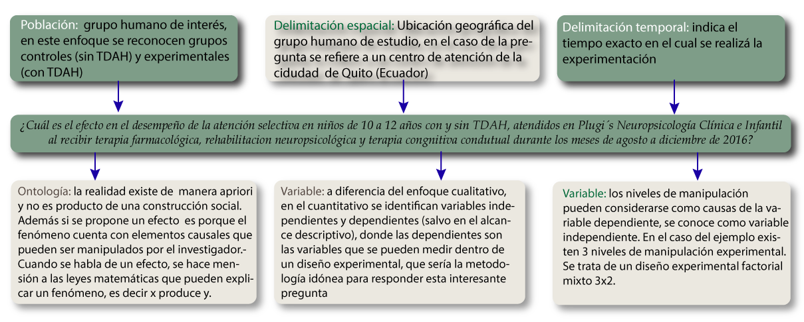
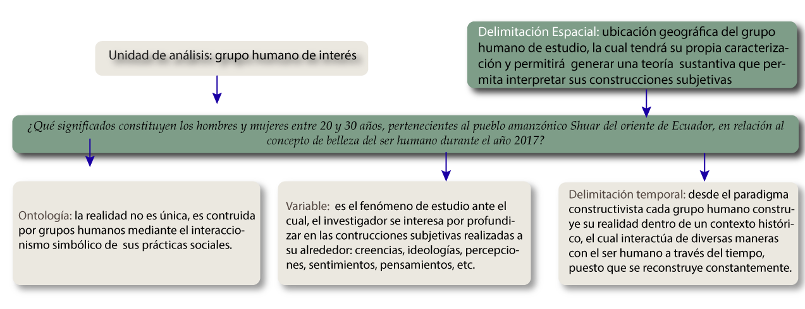
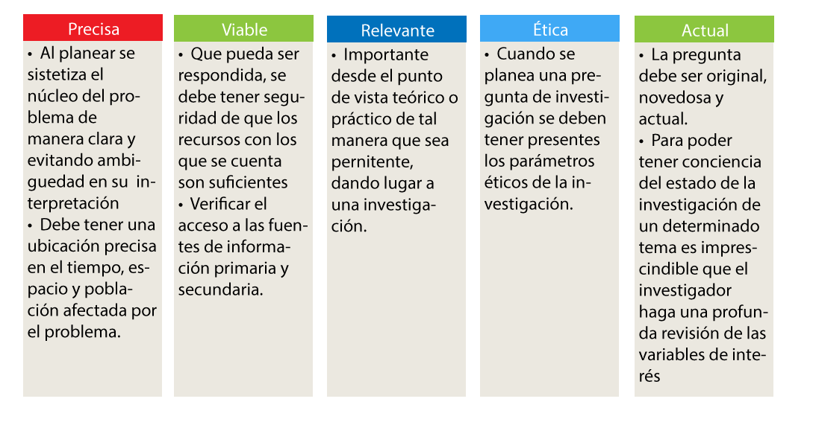

Pregunta de investigación
El problema crítico o central se puede expresar a través de un enunciado interrogativo conocido como pregunta de investigación, una ruta para el planteamiento de dicha pregunta es la siguiente:
- Delimitando temporal y espacialmente el problema.
- Especificando el grupo poblacional al que afecta el problema.
- Analizando la utilidad que tendría dar respuesta a la pregunta y si es viable de responder.
De acuerdo con lo descrito por Ramos (2016), en el enfoque cuantitativo la pregunta de investigación hace mención al estudio de la realidad objetiva, mientras que en el enfoque cualitativo a la realidad subjetiva. En consecuencia, la pregunta de investigación cualitativa debe poseer la caracterización de construcción de realidad mediante los significados que emergen en la interacción simbólica de un grupo humano. En la pregunta de investigación cuantitativa se debe hacer mención a la medición, manipulación o análisis estadístico que se pueda realizar a un determinado fenómeno.
En la siguiente figura Ramos (2016) describe a través de un ejemplo la pregunta de investigación cuantitativa con los elementos que la caracterizan.

Fuente: Elaboración Propia
Mientras que en la siguiente figura es posible identificar los elementos que caracterizan la pregunta de investigación cualitativa (Ramos, 2016).

Fuente: Elaboración Propia
A continuación, se sintetizan los criterios a tener en cuenta durante la formulación de una pregunta de investigación:

Fuente: Elaboración Propia
Es importante evitar:
- Formular preguntas que tengan como respuesta si o no.
- Plantear preguntas sobre sucesos futuros o existenciales.
- Que las preguntas incluyan posibles respuestas o juicios de valor.
- Preguntas sin límite espacial o temporal (Ferreyro y Longhi 2014, Ortega, 2016).